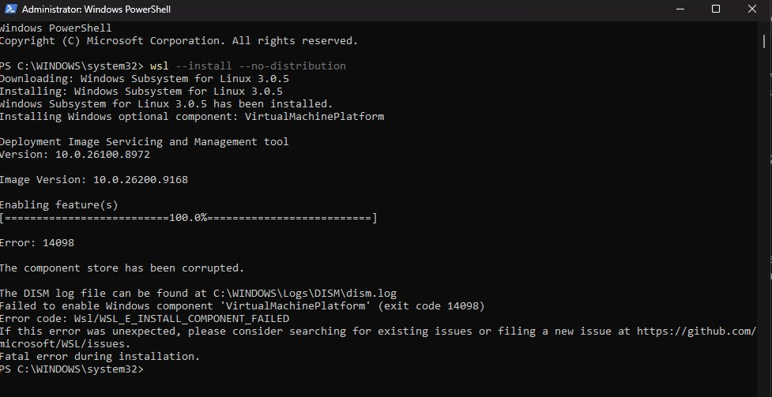
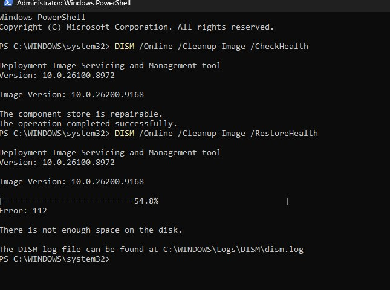
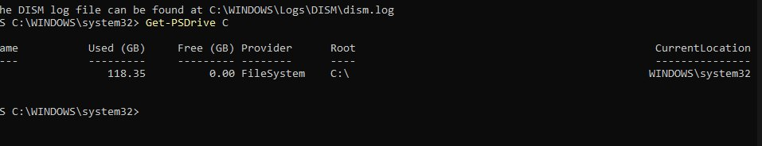
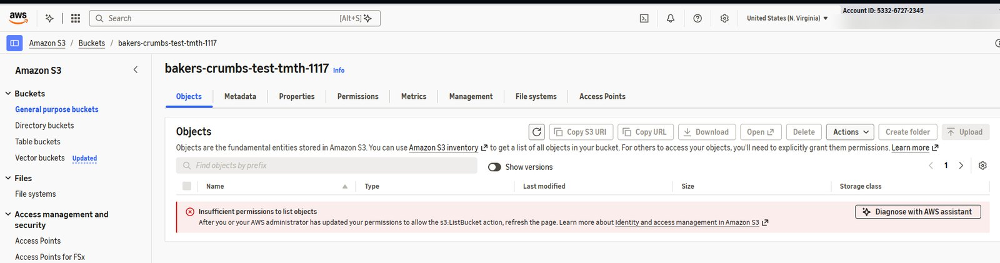
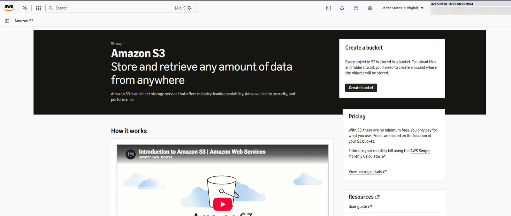
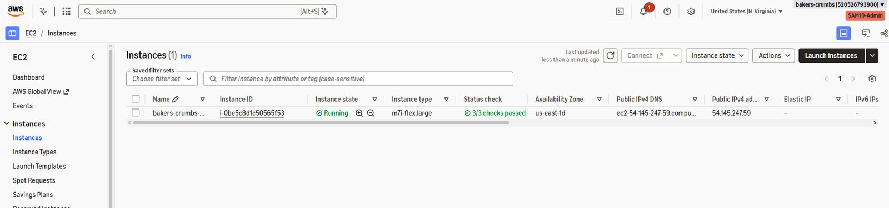

Baseline: the environment before I touched it
The starting point was a laptop that could not run the system and a school AWS environment that could not keep it running. Both decided how the project was built.
Laptop (17 Nov 2026)
The brief asks for the base system to run locally first. My Windows laptop's C: drive had about 2.4 GB free out of 118 GB. Installing WSL, which Docker needs, failed with error 14098 ("the component store has been corrupted"). Two repairs failed: DISM error 112 after the drive reached 0.00 GB free, then error 0x800f0915 (no repair source). I stopped there and ran the base system directly on an AWS server instead.





AWS Academy sandboxes (17 Nov 2026)
The Cloud Foundations sandbox states that resources are deleted at the end of each session. I tested the Cloud Operations sandbox: created a bucket, ended the 2-hour session and started a new one. The account ID changed and the bucket was gone. A system that must run unattended, keep 7 days of backups and be shown to the instructor cannot live there, so I opened a personal AWS account on the Free plan.




New AWS account at the start (17 Nov 2026)
| Item | State before my changes |
|---|---|
| Login | Root user only, no MFA |
| Budget alert | None |
| Credits | $100 Free plan sign-up credit, $0 used |
| Audit trail | No CloudTrail trail |
| Servers, storage, database | None |
| Monitoring, alarms, backups | None |
The freshly deployed system, before operations work (23 Nov 2026, ~14:20 PST)
| Item | State |
|---|---|
| Server | One m7i-flex.large, 30 GB encrypted gp3, Session Manager access, no SSH |
| Access | Plain HTTP on the server's public IP (changed on every stop/start) |
| Monitoring | Only the default EC2 CPU and status metrics; no logs in CloudWatch, no alarms, no memory or disk metrics |
| Backups | None for the database |
| Failure detection | A user seeing an error; incident 1 was found only because I was testing |
